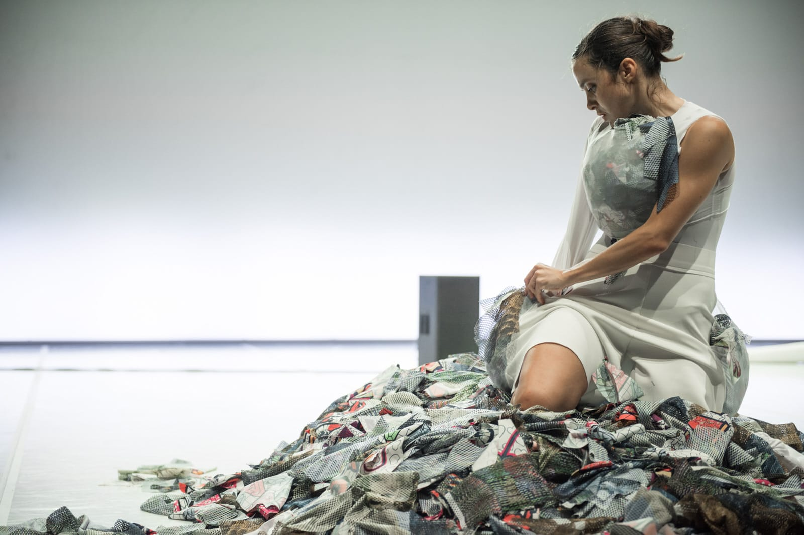

To Be Banned From Rome
To Be Banned From Rome trova il proprio terreno di indagine all’interno dello spazio della rete e di alcune community che la abitano. Il tema fondamentale è la distorsione della geografia mentale, sia per quanto riguarda la sfera di influenze nella costruzione dell'individuo, sia nella prospettiva con cui ci si relaziona alla società esterna e ai suoi accessori culturali. La drammaturgia è pensata senza il limite delle arti in scena: ogni elemento coreografico, musicale, scenico è scritto e immaginato a quattro mani, e dà vita a un’opera che nasce sin dal principio come una riflessione condivisa, il cui presupposto è la neutralità del mezzo virtuale.
Partendo dagli inni memetici della rete e dai nuovi generi nati in seno a questa (Accelerazionismo, Vaporwave), la musica di Bienoise/Alberto Ricca ricostruisce lo stato di attenta ipnosi che si vive di fronte allo scorrere di una pagina su uno schermo e, assieme al movimento, genera un flusso costante ma denso di avvenimenti, sfruttando anche l’acustica dei luoghi di rappresentazione per creare momenti di maggiore o minore virtualità. Allo stesso modo, la danza di Annamaria Ajmone trasforma costantemente lo spazio e al tempo stesso i volumi del corpo. In scena, i materiali di stoffa costruiscono lo spazio abitato, e così il tessuto stesso diventa emblema di un luogo immaginario morbido, artificioso e flessibile.
Tutti gli elementi spingono chi guarda ancora più a fondo nella suggestione percettiva, somma delle atmosfere e della densità dei materiali, permettendo allo spettatore di restare sospeso, in contemplazione.
Produzione Torinodanza festival, Cab 008, Club To Club Festival.In collaborazione con The Italian New
Wave.
Progetto realizzato nel contesto di Residenze Coreografiche Lavanderia a Vapore / Piemonte dal
Vivo.
Selezionato da Hangar Creatività.
Progetto promosso dall’Assessorato alla Cultura della Regione Piemonte con il sostegno di MiBACT
e Regione Toscana.
Grazie ad Alberto Leoni / IUTER.
Ideazione
Annamaria Ajmone & Alberto Ricca
Coreografia e danza
Annamaria Ajmone
Musica live
Bienoise (Alberto Ricca)
Spazio e costumi
Jules Goldsmith
Luci e direzione tecnica
Giulia Pastore
“To be banished from Rome is but to live outside of Rome.”
Helen Keller, “The Story of My Life”
Ascolta Bienoise